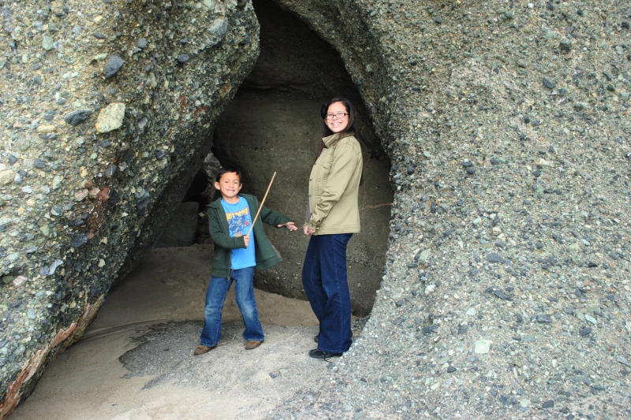
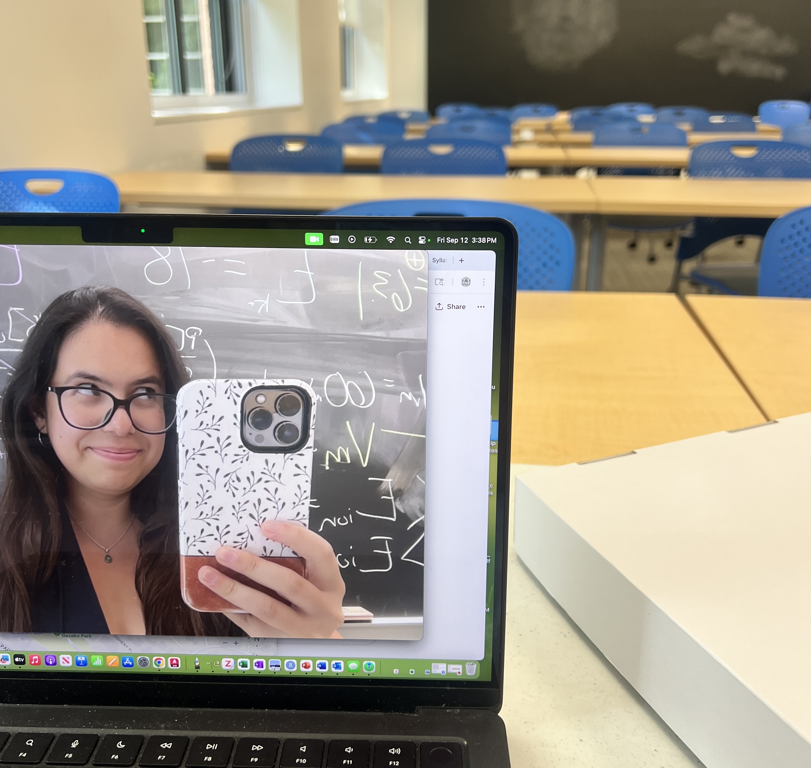
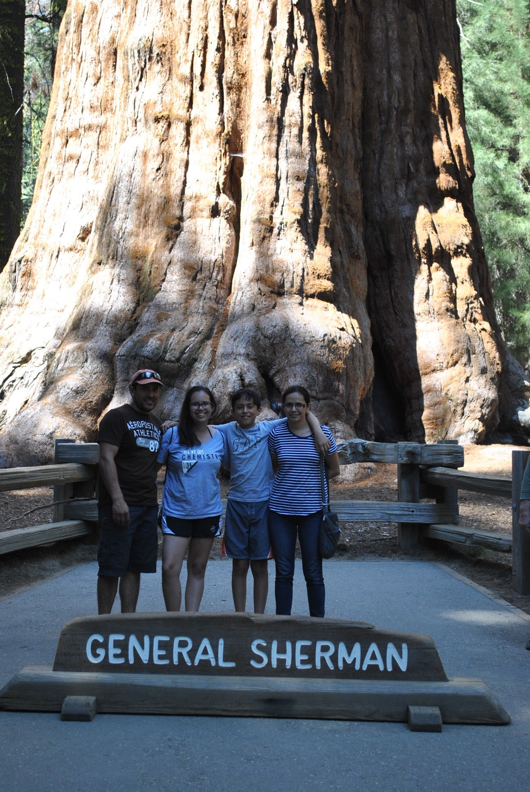
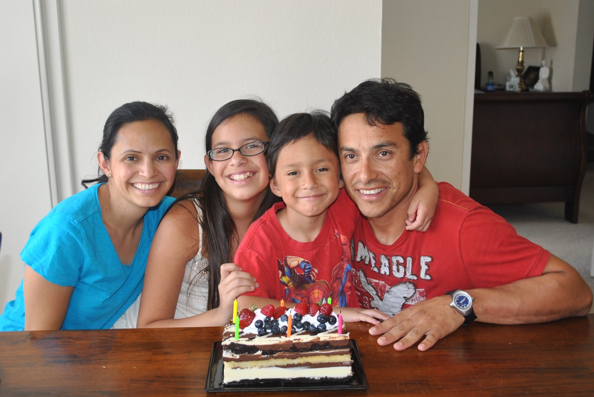

Aenean ornare velit lacus, ac varius enim lorem ullamcorper dolore aliquam.

As a kid, I loved nature and books. I spent a lot of time outside looking at bugs or collecting things, and just as much time reading about crazy science and far-away places. I didn’t think of it as the foundation for my interest back then — I was just curious about how things worked. That curiosity never really went away, and it’s a big part of what led me to study behavior and the environment today.

Before graduate school, I worked on projects that deepened my interest in how environmental change shapes behavior — from field studies to computational analyses. Those experiences reinforced for me that science isn’t just about collecting data; it’s about learning to look closely, to be creative, and to care about the systems we’re part of.

I’ve always liked having a mix of structure and freedom, and doing hands-on things helps me unwind from computer work. I like feeling productive in small, simple ways — cooking a meal, organizing something, or getting outside for a bit. Those quiet routines make the day feel balanced and remind me to enjoy life outside of research, too.

If you are interested in staying up to date with my monthly happenings click the following link to me added to an email list server that will send a monthly newsletter
Aenean ornare velit lacus, ac varius enim lorem ullamcorper dolore aliquam.

Aenean ornare velit lacus, ac varius enim lorem ullamcorper dolore aliquam.

Aenean ornare velit lacus, ac varius enim lorem ullamcorper dolore aliquam.
Sed varius enim lorem ullamcorper dolore aliquam aenean ornare velit lacus, ac varius enim lorem ullamcorper dolore. Proin sed aliquam facilisis ante interdum. Sed nulla amet lorem feugiat tempus aliquam.